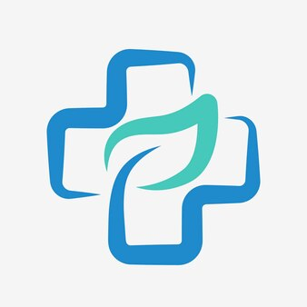

Clínica MedComp
Sobre Nós
A Clínica Medcomp é referência em atendimento médico de qualidade em Uberlândia, Minas Gerais. Somos uma clínica multidisciplinar com foco no cuidado integral do paciente, oferecendo um ambiente acolhedor e profissionais altamente qualificados.
Nossa missão é proporcionar aos nossos pacientes um atendimento médico de excelência, com foco na qualidade, humanização e respeito. Acreditamos que a saúde é o bem mais precioso e que cada paciente merece ser tratado de forma individualizada e com atenção especial.
A Clínica Medcomp oferece uma ampla gama de especialidades médicas, exames complementares e serviços de apoio, tudo em um só lugar, para sua comodidade. Contamos com uma equipe de profissionais experientes e atualizados, que se dedicam a oferecer o melhor atendimento possível aos nossos pacientes.
Nossos Valores
- Ética:
Atuamos com transparência e honestidade em todas as nossas relações, pois acreditamos na verdade e na justiça. Respeitamos a autonomia e a privacidade dos nossos pacientes, garantindo um ambiente seguro e confiável.
- Responsabilidade:
Somos comprometidos com o bem-estar dos nossos pacientes e com a qualidade dos serviços prestados. Assumimos a responsabilidade por nossas ações e decisões, buscando sempre a excelência em tudo que fazemos.
- Humanização:
Acreditamos na importância do atendimento humanizado e personalizado, tratando os nossos pacientes com respeito, empatia e compaixão. Criamos um ambiente acolhedor e seguro para que se sintam confortáveis e confiantes.
- Competência:
Buscamos constantemente aprimorar nossos conhecimentos e habilidades para oferecer o melhor atendimento possível. Investimos na formação e no desenvolvimento profissional dos nossos colaboradores, adotando as melhores práticas e tecnologias disponíveis.
- Inovação:
Buscamos constantemente novas soluções para melhorar a qualidade dos nossos serviços. Estamos abertos a novas ideias e tecnologias, incentivando a criatividade e a iniciativa dos nossos colaboradores.
- Sustentabilidade:
Somos comprometidos com a preservação do meio ambiente e com a responsabilidade social. Adotamos práticas sustentáveis em nossas operações e apoiamos iniciativas que promovem o bem-estar da comunidade.
- Trabalho em Equipe:
Acreditamos na força do trabalho em equipe para alcançarmos os nossos objetivos. Valorizamos a colaboração, a comunicação e o respeito mútuo entre os nossos colaboradores, promovendo um ambiente de trabalho positivo e motivador.
- Excelência:
Buscamos a excelência em tudo que fazemos, sempre buscando superar as expectativas dos nossos pacientes. Somos apaixonados por cuidar da saúde e do bem-estar dos nossos pacientes, oferecendo um atendimento médico de qualidade superior.